Claude Code UI envanteri · #26–49 Varlıklar ayrı kaynak dosyalarda, örnek sayıları/etiketleri runtime’da basılacak. #49 eski skin korunuyor; yeni 4c örnek seçimi beklemede. Ölçü ve durum listesi · HANDOFF
#26 Oyun arka planı · 1125×2001 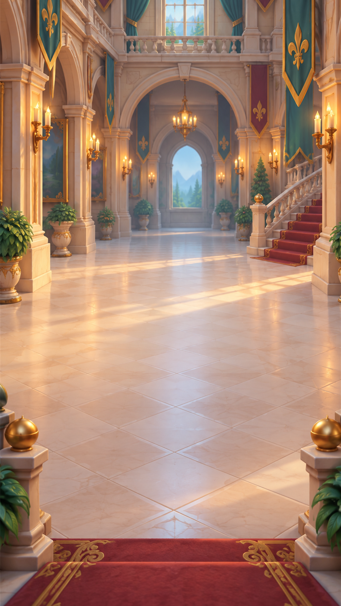
#27–31 Üst bar / booster 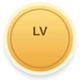
Level rozeti · 156 Parça, saat, reset ikonları Reset düğmesi · 138 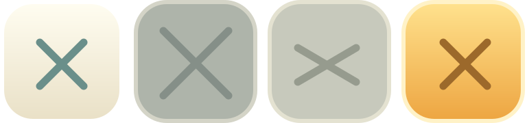
Booster yuvaları · 3 durum Stok ve kilit rozetleri #32–37 Kart ve buton kitleri Kapat · 108 Kilit ikonu · 42 Kilit ikonu karosu · 156 
Popup karartması · %90 #38–48 Tahta, engeller, sonuç ve loading 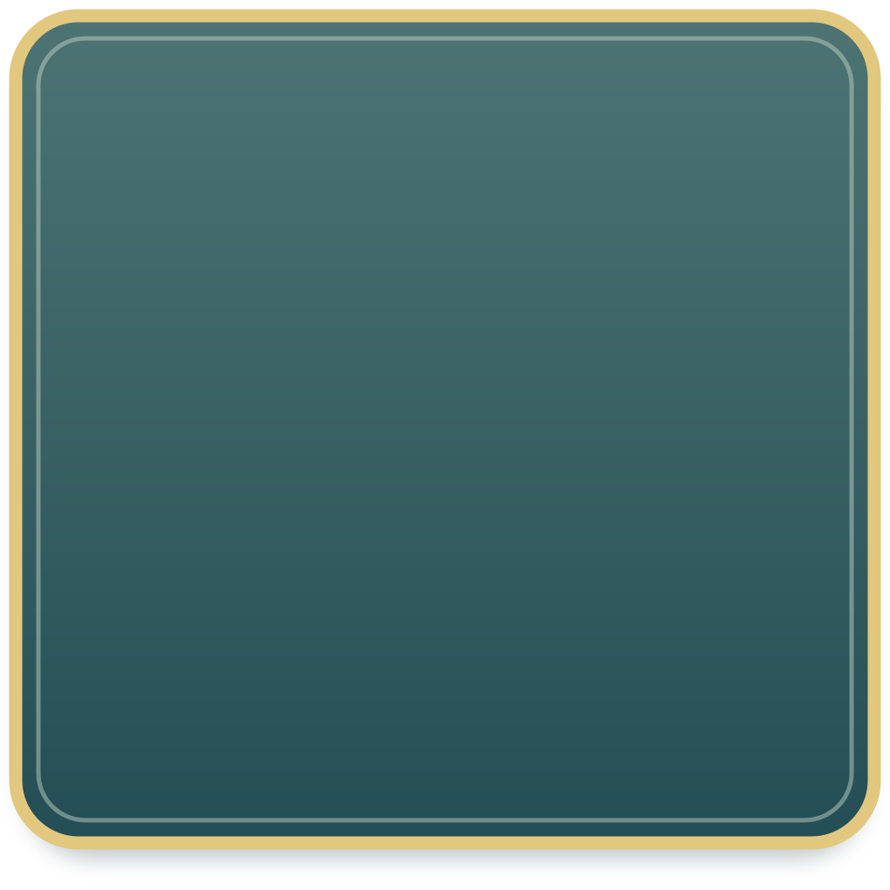
Tahta tepsisi 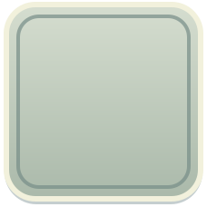
Boş hücre Duvar tile Zincir uçları Çivi / bomba rozetleri Dolu / boş yıldız İlerleme çubuğu Toast Bölüm hücreleri · 4 durum 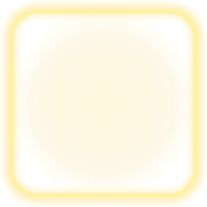
Tutorial hedef parlaması Ek çizim kalemleri Sonuç yıldızı · 3 kare 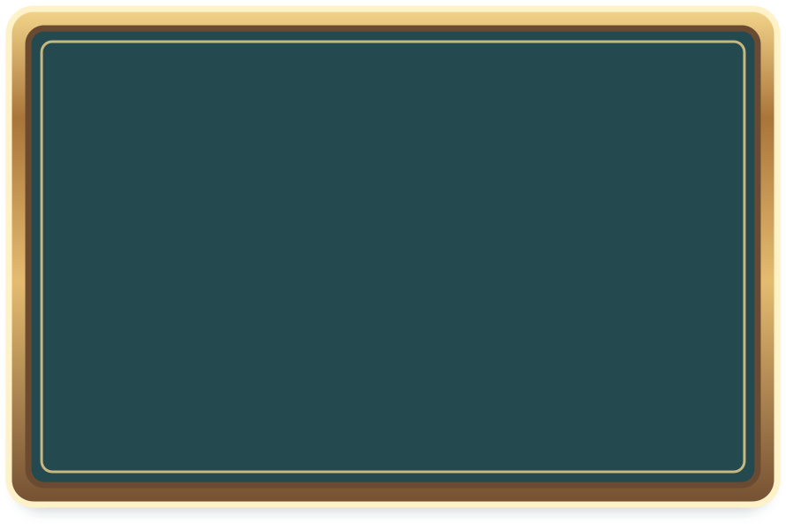
Sonuç resmi çerçevesi 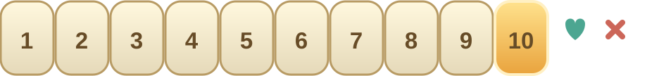
Puan / beğen / beğenme Bomba normal / sıcak nabız Zincir uç diski tonları 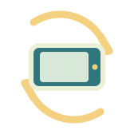
Yatay ekran telefonu çevir 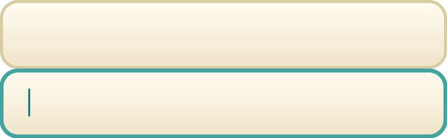
İsim alanı normal / odak Font önerisi: Nunito; yuvarlak başlık karakteri, Latin Extended/Türkçe desteği ve SIL OFL 1.1. Lisans .